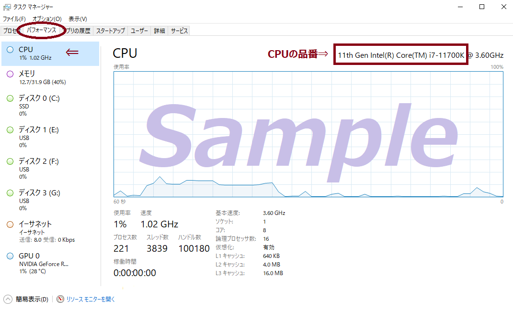
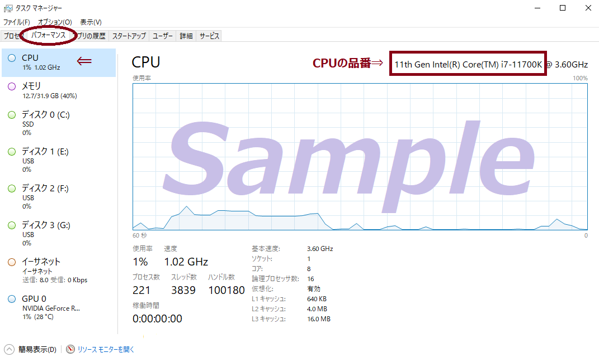

×

CPU・GPU・VRAMの確認方法
Ctrl + Alt + Delete を同時に押し、 表示された画面から「タスクマネージャー」を選択してください。
タスクマネージャーが開いたら 上部の「パフォーマンス」タブをクリックし、 左側の CPU / GPU を選択します。

CPU: -
GPU: -
※あくまでも参考設定の為、ご利用の環境によって結果が異なる場合があります。
Ctrl + Alt + Delete を同時に押し、 表示された画面から「タスクマネージャー」を選択してください。
タスクマネージャーが開いたら 上部の「パフォーマンス」タブをクリックし、 左側の CPU / GPU を選択します。
